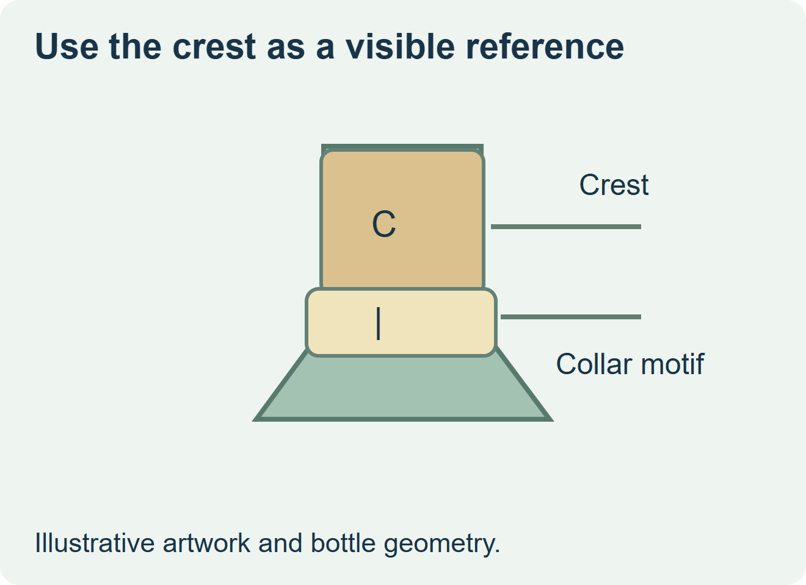
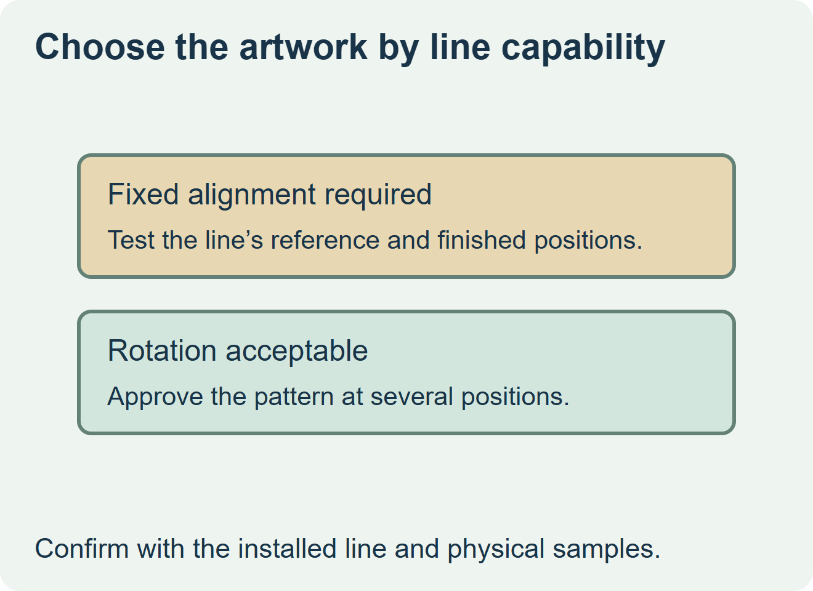

Specify a registered collar if the design needs a visible collar feature to sit under the crest on the finished foil. Confirm that the bottling line can locate that reference. If it cannot, compare a collar with a repeating pattern or no front-facing focal point. Check placement height and foil clearance in either design.


Name the reference on the finished bottle
Put the crimped foil, collar and front label on the same proof drawing. Mark which feature controls the collar’s angle, such as a visible crest or a machine-readable spot mapped to it. Name the feature the reader should actually see on the finished bottle. CDA describes cap pre-positioning and collar orientation as possible configurations on its sparkling wine equipment. Ask the bottler which options and sensing references it has installed. CDA sparkling wine crimping and collar stations
| Design condition | Proposal to evaluate | Evidence to request |
|---|---|---|
| Crest and collar motif must line up | Registered collar applied from an approved reference | Representative finished bottles that show the position of both marks. |
| Pattern looks acceptable from several angles | Collar artwork approved without a fixed front-facing feature | Finished bottles at the expected range of angular positions. |
| Crest, collar and body art must all line up | One approved reference chain across the relevant stations | A trial confirming all three relationships across representative bottles. |


Approve a range the bottler can check
Choose an approved example and examples near the limits before authorizing print. Have the bottler confirm the measurable angle or position range it can evaluate and the view used to judge it. Include a sample after a product or foil change if the reference can move between versions.
For a hypothetical sparkling wine, a vertical collar stripe under a gold crest needs a repeatable reference. A repeating gold border may give the intended appearance without that dependency. Compare the proposals on finished bottles and retain the approved reference and artwork revision with the order.
Discuss the unresolved label requirement
Send the actual bottle and crimped foil, the collar drawing and artwork, the crest reference, the bottler’s available registration station and approved alignment range, and quantities by SKU. Review wine label options and prepare a label specification inquiry. The contact page opens an email draft and lists email or WhatsApp for attachments. Supply, proof options, testing, pricing and timing require project confirmation.